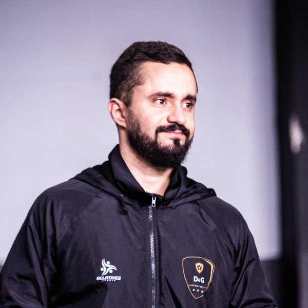

Proprietário
Gabriel Nascimento
Atleta profissional
Educação Física
Educação Física
Leva para dentro da escola a rotina, a disciplina e o padrão de exigência que aprendeu vivendo o futebol de alto rendimento todos os dias.
@g8_nascimento
Formação de base